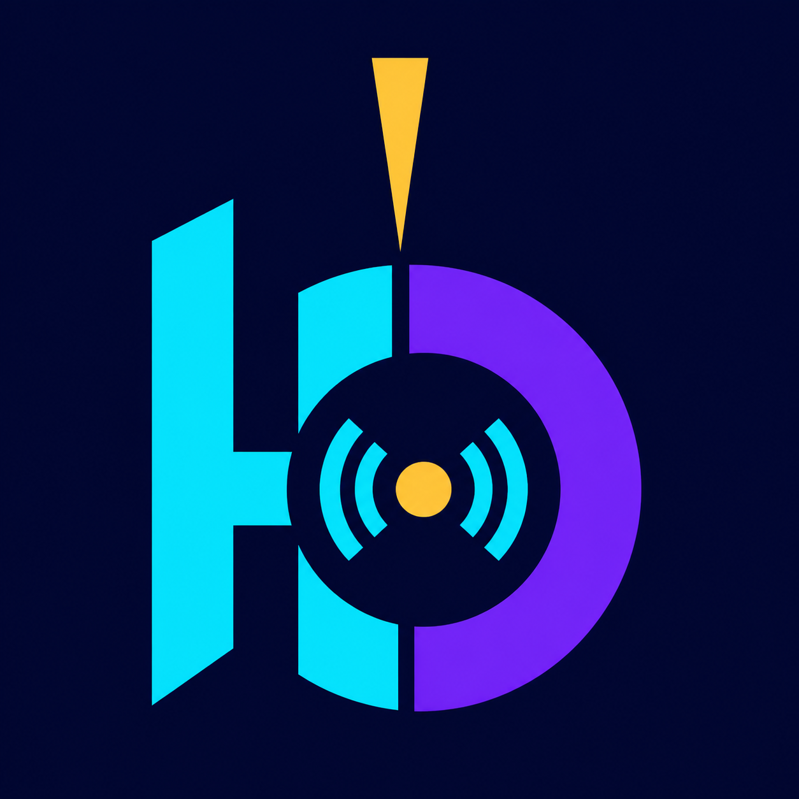

Yayın sahnesi
Widget’ları sürükleyin, boyutlandırın, hizalayın ve katman sıralarını kalıcı olarak kaydedin.

Haliloxo Live Studioİçerik üreticilerinin canlı yayın sahnesini, sohbetini, medya kaynaklarını, etkileşimli widget’larını ve yayın ayarlarını tek bir Windows masaüstü uygulamasından yönetmesini sağlayan yayın aracıdır.
UYGULAMANIN AMACI
Haliloxo Live Studio; TikTok odaklı canlı yayın hazırlığı, yayın sahnesi düzenleme, gerçek zamanlı sohbet görüntüleme, hediye ve beğeni etkileşimleri, medya oynatma, katman yönetimi, kamera ve ekran kaynakları ile RTMP yayın araçlarını bir araya getirir. Amaç, yayıncının birden fazla yardımcı program arasında geçiş yapmadan yayınını hazırlayabilmesi ve yönetebilmesidir.
Widget’ları sürükleyin, boyutlandırın, hizalayın ve katman sıralarını kalıcı olarak kaydedin.
Sohbet, hediye, beğeni ve izleyici etkinliklerini yayın düzeninin parçası olarak yönetin.
Kamera, ekran, pencere, tarayıcı, metin, resim, GIF, video ve ses kaynaklarını ekleyin.
RTMP ayarlarını, kayıt seçeneklerini, ses aygıtlarını ve performans kontrollerini tek arayüzden yönetin.
GOOGLE HİZMETLERİ
Google ile oturum açma isteğe bağlıdır. Kullanıcı açıkça izin verdiğinde uygulama, bağlı hesabı doğrulamak için temel profil bilgilerini; yalnızca uygulamanın oluşturduğu veya kullanıcının uygulamayla açtığı ayar profili dosyalarını yedeklemek için Google Drive erişimini; YouTube hesabındaki kanal ve oynatma listesi bilgilerini salt okunur biçimde göstermek için YouTube erişimini kullanır.
drive.file kapsamıyla uygulamanın kullandığı dosyalarla sınırlandırılır.RESMİ MARKA KİMLİĞİ
Bu web sitesi, Haliloxo Live Studio Windows masaüstü uygulamasının resmi tanıtım ve politika sitesidir. OAuth izin ekranında görünen uygulama adı ve logo bu sayfadaki ad ve logoyla aynıdır.
DESTEK VE İLETİŞİM
Uygulama, Google hesap bağlantısı veya kişisel verilerle ilgili sorular için haliloxox@gmail.com adresinden geliştiriciyle iletişime geçebilirsiniz.